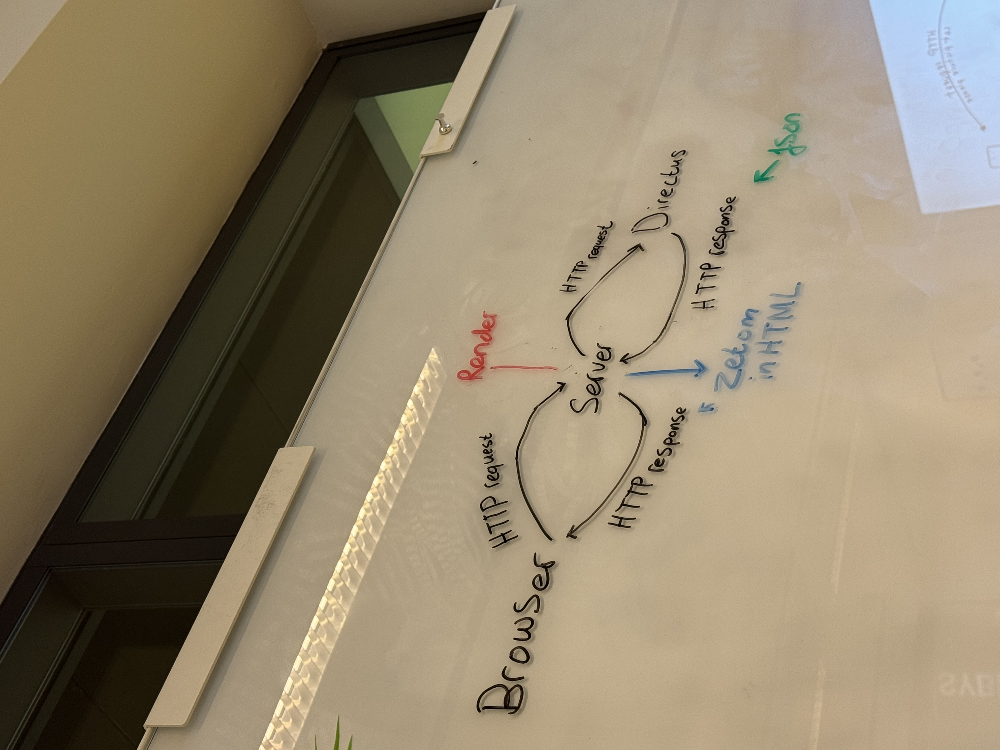

gestructureerde manier van het opmaken van pagina's
elementen van HTML in elkaar zetten heet 'nesten'
CSS
vorm, layout, typografie, animatie
met selectors zoals p, * en a kan je kleuren selecteren
color = property, waarde = rood samen vormt dit een declaratie
JS
wordt gebruikt voor bewegingen op een website
wanneer de gebruiker ergens overheen gaat met zijn muis ontstaan er
bewegingen
3 studievragen
wat is het nut van een breakdown schets?
hoe kan je het beste onthouden welke letters en tekens waarvoor bedoeld
zijn?
waar ben ik nou eigenlijk mee bezig, als ik iets intik en het is goed
denk ik fijn maar ik weet niet wat ik doe
sprint-1 week 1 dag 3
uitgezocht waaruit de HvA website is opgebouwd
sprint-1 week 1 dag 4
JS: querySelector, addEventListener,
sprint-1 week 2 dag 3
Schrijf drie dingen op die je vandaag hebt geleerd
ik heb zelf grids toegepast in de squad page.
Ik heb geleerd hoe ik @media kan gebruiken om pagina's automatisch aan
te laten passen aan de grootte van het scherm.
Ik weet nu hoe ik goed een breakdown schets kan maken die voor iedereen
te begrijpen is.
sprint-1 week 2 dag 5
welke feedback heb je gegeven aan de squad page van een ander team?
Ik heb tips gegeven over de keuze van tekst en toevoeging van tekst bij
paragrafen
welke feedback heb je ontvangen en waar wil je aan het weekend iets aan
doen
de site ziet er overzichtelijk uit en is responsive, na het weekend moeten
er links naar de profielkaarten komen.
Sprint-1 week 3 dag 1
op welke manieren kan je visuele hiërachrie aanbrengen in je ontwerp? lege
ze kort uit
je kan visuele hiëarchie toevoegen aan je ontwerp door de grootte,
kleur/contrast witruimte en positie en animatie te gebruiken
Welke niveaus van visuele hiërarchie heb je geleerd?
1: het meest belangrijke waar de gebruiker naar moet kijken, de main info
2: belangrijke details die van belang zijn op de hoofdzaak
3: Overige algemene informatie die belangrijk kunnen zijn maar de
gebruiker niet direct nodig heeft
Wie is Joshua Porter en wat bedoelt hij met; 'visual hierarchy'?
Joshua Porter is de creator van 'what to wear'en een designer, met de
quote visual hierarchy bedoeld hij de manier waarop belangrijke informatie
door de gebruiker eerder gezien wordt dan bijzaken of achtergrond info met
behulp van kleuren, tekstgroottes, contrast etc.
sprint-1 week 3 dag 3
wat heb ik geleerd vandaag?
vandaag hebben we updates gemaakt aan onze squad page, ik heb geleerd dat
het gebruik van media queries echt specifiek onderdelen van je code per
stuk aan moet roepen, echter vind ik het erg lastig te bepalen waar dit
moet staan en wat ik dan moet invullen.
sprint - 2
Sprint-2 week 1 dag 1
vandaag geleerd hoe je met een opdrachtgever moet communiceren en de
juiste vragen moet stellen aan de hand van een briefing en debriefing.
Sprint-2 week 1 dag 3
welke 3 dingen heb je geleerd over
schaduwen tekenen om te laten zien dat je op een knop hovert
eerst de tekst op schrijven en dan pas een knop eromheen tekenen
duidelijk de hierarchie in typografie zien om duidelijk aan te tonen wat
belangrijk is.
Sprint-2 week 1 dag 5
vandaag heb ik van de css van een andere groep kennis opgedaan ik heb
geleerd hoe je met HTML echt alleen de basis legt en nog geen gebruik
maakt van CSS
sprint-2 week 2 dag 1
wat is het verschil tussen flexbox layout en grid layout? wanneer zou je
welke gebruiken
flexbox is één dimensionaal en werkt dus in maar een richting, rij of
kolom. grids zijn twee dimensionaal. flex zou je gebruiken voor het netjes
uitlijnen of onder elkaar zetten van items. grids kan je gebruiken voor
complexere layouts met vaste structuren
sprint-2 week 2 dag 3
drie eigenschappen van leesbare tekst zijn
headings en tussenruimte
regels niet langer dan 10-12 woorden
tekst is minimaal 16px groot
door mobile first te gaan werken moet je altijd met een klein scherm als
voorbeeld beginnen en dan vanaf daar naar groter werken en zorgen dat het
mooi blijft. je gebruikt bij media queries hierom ook altijd min-width.
Sprint-2 week 3 dag 1
3 code conventies
tabs
spaties
ademruimte/witregels
hieronder de link waarin je kan zien dat ik deze 3 dingen heb toegepast op
me code
https://github.com/JulianDavelaar/the-client-website/blob/d2df4742c273b59e3ea20c4b11283f3fb8f7aa58/index.html#L9C1-L38C14
je kan de leesbaarheid van de code verbeteren door duidelijke namen te
gebruiken en goede sections weer te geven. en met refactoren pas je de
code conventies toe op je eigen code.
sprint-2 week 3 dag 3
Wat vond je van de feedback die je hebt ontvangen van de mentor? Welke
feedback ga je verwerken voor de sprint review?
afbeeldingen van de opdrachtgever invoegen en afrondingen maken voor de
buttons.
wat is jouw belangrijkste vraag voor de opdrachtgever die je wil stellen
tijdens de sprint review?
kan je zonder inloggen de foto's van andere gebruikers zien of blijft dat
prive?
Sprint - 3 week 1 dag 1
Voor wie is toegankelijkheid belangrijk?
voor mensen met beperkingen, niet alleen altijd maar ook tijdelijk of
situationeel
Voor woensdag ga ik de webpagina die ik heb gekozen nog handmatig
controleren en dit in me wiki schrijven
Beschrijf drie voorbeelden voor moeilijke WCAG richtlijnen
remove horizontal scroll
use fieldset and legend elements where appropiate
Associate input error messaging with the input it corresponds to
Sprint - 3 week 3 dag 1
een voorbeeld van een kleurcombinatie met een goed contrast is
bijvoorbeeld wit op een rode achtergrond. een kleurcombinatie die minder
goed werkt is oranje op rood omdat dit 2 warme kleuren zijn. ik denk dat
ik me aan WCAG level AA ga houden, zodat ik wel de meeste mensen kan
helpen die problemen hebben bij het bedienen van websites. en ik denk dat
het afhangt van de soort website die ik bouw in hoeverre ik me bezig hou
met de accessibility.
Sprint - 3 week 3 dag 3
wat ik anders ga aanpakken komende sprint review is alvast mijn vragen
opschrijven en meer werk leveren zodat ik meer kan reviewen
2 verbeteringen in de readme die ik heb gemaakt, zijn het duidelijker
opschrijven van hoe de website werkt, en logischere zinsopbouw.
ik wil feedback van de opdrachtgever op hoe we nu aan het werk zijn als
groep. Of het oke is als me eigen draai die ik eraan ga geven het
volledige design veranderd & welke gegevens bij het profiel van de
gebruiker moet staan en of de profielen ook vindbaar zijn voor andere
gebruikers.
Sprint - 4 week 1 dag 1
Ik heb geleerd dat de huisstijl erg belangrijk is voor een website en je
hiermee goed je merk herkenbaar kan maken. ik heb geleerd dat keuzes met
je groepje maken over de kleuren etc ook best lang kan duren ook heb ik
geleerd dat een website veel meer kleuren heeft dan in eerste instantie
lijkt.
vandaag heb ik geleerd dat het maken van custom properties veel
makkelijker is en dat je hiermee alle kleuren op je site kan aanpassen
door er maar eentje aan te passen. Ook heb ik geleerd dat kleuren elkaar
kunnen overschrijven wanneer je de juiste volgorde gebruikt. En dat je een
stylesheet die je samen maakt kan inladen in je eigen code en voor jezelf
kan gebruiken.
interresante voorbeelden uit de slides:
https://css-tricks.com/specifics-on-css-specificity/ bij de checkout van
week 1 dag 1 staan nog links naar codepen van FDND - Typografie - Oefening
2 - uitwerking
Sprint - 4 week 1 dag 5
Feedback die wij hebben gegeven aan andere teams ging voornamelijk over de
lees en overzichtelijkheid van de pagina, we hebben ze ook tips gegeven.
Wat de andere teams goed deden was de pagina opmaken met lettertype en
achtergrond, dit kunnen wij ook nog wel toevoegen. Ik ga aan de issues in
het weekend werken en begin volgende week, het liefst heb ik ze voor einde
van het weekend af.
Sprint - 4 week 2 dag 1
Dit is mijn tekst met een ander font.
Sprint - 4 week 2 dag 2
Sprint - 4 week 2 dag 5
maak je genoeg gebruik van de gezamenlijke stylesheet?
ja, in mijn design heb ik alle kleuren die ik gebruik aangesloten op de
styleguide.
benoem 2 voorbeelden hoe je gebruik maakt van de cascade
gaat over de werking van van de similarity principes en wat je wel en
niet kan gebruiken
2 dingen die je nog wilt leren
hoe je dit specifiek kan toepassen op websites waar dit erg lastig is
welke vormen je het beste kan gebruiken om je website mooi te houden
sprint 5 week 1 dag 1
Ik wil javascript leren en begrijpen zodat ik er beter in wordt
Hoe ga ik JS toepassen op de snappthis pagina
zoveel mogelijk tijd in de JS fundamentals stoppen en er veel mee bezig
zijn
Ik ken nog geen javascript begrippen, ik ga aan de JS fundamentals
werken EN learnprogramming.online van Jad
sprint 5 week 1 dag 3
wat moet ik nog doen om van comments naar code te gaan met JS
ik moet het stappen plan afmaken en per JS onderdeel de code gaan
invoeren, hiervoor moet ik nog een nieuwe page voor snappthis maken
ik heb van learnprogrammmingonline al een hoop lessen gedaan en ben nu bij
les 13
ik ga aan de learnjavascript.online werken vanaf vandaag
Sprint 5 week 2 dag 3
wat ik nog niet wist over html is dat je op een best simpele manier een
form required kan maken.
volg deze knop om te kijken naar een demo'tje
knop
voor vrijdag wil ik de interactie toevoegen bij de form waar je de datum
moet kiezen dat de datum invullen verplicht is.
brave is en blijft mijn favoriete browser, dit omdat deze gewoon op
google basis is en ad en trackingblokkers heeft.
elke browser heeft zijn eigen interface, ik denk dat het heel fijn is
dat je je eigen keuze kan maken in waar je voorkeur ligt en dat elke
browser tot dezelfde functies bestaat.
Sprint 5 week 2 dag 5
Hoe ging het testen met een testpersoon? is het gelukt om diegene hardop
te laten voorlezen,
de persoon niet te beinvloeden en geen vragen tussendoor te beantwoorden/
ging heel goed, gebruiker wist waar hij naartoe moest navigeren en hoefde
hem daar niet bij te helpen.
wat ging goed, en wat kan er beter/
de test ging goed, er was alleen wat te weinig om te laten zien dus voor
volgende keer ook even zorgen dat de layout modes werken
hoe ging de tweede user test? zijn daar nog verbeterpunten uitgekomen die
je volgende week gaat oppakken?
ja, check de issues van fix the flow
sprint-5 week 3 dag 1
3 studievragen over navigeren en tabel
wat is de beste manier om je pagina overzichtelijk te houden aan de hand
van navigatie
wanneer gebruik je tabellen en wanneer juist niet
hoe kan je feedforward/feedback met combineren met nivigatie.
2026
goede voornemens dit jaar
meer tijd in school stoppen
meer discipline in alles wat ik doe
hoe kunnen we elkaar gaan helpen en beter worden
vragen stellen aan elkaar
meer samenwerken en elkaar helpen wanneer je vastloopt
Sprint-6 week 1 dag 5
Projectboard is bijgewerkt, blijf dit doen.
tijdens het reviewen gezien dat anderen grotere stylesheets hebben met
name bij de fonts
dit moet ik zelf ook nog even doen.
de CSS tip uit de video die ik ga toepassen is de vw, dit is een handige
en makkelijke manier om mijn site meer responsive te maken
sprint-6 week 2 dag 3
Beschrijf 3 nieuwe CSS properties die je nog niet kende. schrijf een
paar zinnen over deze properties naar voorbeelden
inset, om daarmee alle kanten van een item ruimte te kunnen geven
transition cubic, hiermee kan je ingewikkelde richtingen waardes geven
en de css vertellen hoe hij moet bewegen
slow in/out, hetzelfde als ease in/out maar dan langzamer
beschrijf 2 Disney animatie principes die je nog niet helemaal begrijpt.
Welke vragen heb je daarover?
Staging, wat bepaald of een stage op de juiste plek staat of niet?
Exaggeration and appeal, wanneer zou je dit gebruiken? hoe belangrijk
moet iets zijn voor dit.
Beschrijf 1 animatie principe dat je toe gaat voegen aan je persoonlijke
website tijdens de assessment week
Ik ga de squash & stretch toevoegen want dit lijkt mij het beste voor de
knoppen en voor de weinige opties die ik heb om animaties toe te voegen
Semester 2
Sprint 7 week 1 maandag
hoe link je bestanden vanuit je public map?
Door met een / te beginnen en dan de path in te voeren die gaat naar wat
je wilt.
Zonder iets voor de / wordt er automatisch in public gezocht
Wanneer moet je je server herstarten?
Als je er langer dan een kwartier niet op bent geweest
Wat moet je doen om je server te herstarten?
Render en je site tabblad opnieuw laden
Heb je syntax highlighting voor liquid code aan staan?
Nu wel
Hoe open je de terminal met je keyboard?
ctrl + `
Wat staat er in de node_modules map?
Codes gebouwt door honderden developers die wij gratis mogen gebruiken
Hoe zou je Liquid beschrijven?
Ik zou liquid beschrijven als een tool net zoals HTML, CSS en JS. alleen
met liquid kan je code in shopify maken en aanpassen.
Wat kun je met liquid filters doen?
Met liquid filters kan je filters gooien over je teksten zoals uppercase
en data juist weergeven
Kun je Liquid code in de browser zien als je de HTML broncode bekijkt?
Nee
Waar wordt Liquid code uitgevoerd?
Liquid code wordt server-side uitgevoerd niet in de browser
Waar wordt HTML uitgevoerd?
HTML wordt wel in de browser uitgevoerd
Wat is een route?
Een route is een pad naar een ander pagina, te zien aan wat er na de /
staat in de zoekbalk
Wat hebben routes met bestandsnamen te maken?
De bestandsnaam is de locatie waar de route naartoe gaat, dit staat
achter de / in de zoekbalk
Kun je in je browser zien welke bestandsnamen je voor views hebt
gebruikt? Kon dat vorig semester wel?
nee
Wat doet JSON.parse()?
JSON.parse zet een string om in bruikbare JSON data.
Sprint 7 week 1 vrijdag
code en design review
van server side code heb ik geleerd dat je data uit een database kan halen
en kan gebruiken in je code. ook kan je strings omzetten in bruikbare code
met JSON.parse
h1 {
.bio,
.profile-picture,
.tech-logo { transition: transform 0.5s ease;
}
Dit vind ik een handig stukje code, bij het inladen van de pagina krijg je
een kleine animatie.
Sprint 7 week 2 maandag
directus en HTTP
De browser stuurt een HTTP(Hypertext Transfer Protocol) naar de server(render) waarin hij vraagt om data.
Render stuurt weer een HTTP request naar de database directus, directus stuurt deze data in json formaat terug.
Render zet de json dan weer om in leesbare HTML en stuurt dit weer door naar de browser.
Hieronder een wat leesbaardere foto.

de uitleg van julia evans is uitgebreider maar komt op hetzelfde neer
Voorbeeld van een GET en POST request uit server.js
app.get("/student/:id", async function (request, response) {
// Gebruik de request parameter id en haal de juiste persoon uit de WHOIS API op
const personDetailResponse = await fetch(
"https://fdnd.directus.app/items/person/" + request.params.id,
);
// En haal daarvan de JSON op
const personDetailResponseJSON = await personDetailResponse.json();
// Render student.liquid uit de views map en geef de opgehaalde data mee als variable, genaamd person
// Geef ook de eerder opgehaalde squad data mee aan de view
response.render("student.liquid", {
person: personDetailResponseJSON.data,
squads: squadResponseJSON.data,
});
});
Een GET request is eigenlijk wat de naam al zegt, je zegt eigenlijk tegen de server,
"hé server, geef me die pagina". De server stuurt terug wat jij wilt en er veranderd verder niks.
app.post("/", async function (request, response) {
response.redirect(303, "/");
});
Je stuurt informatie naar de server om iets te veranderen of op te slaan zoals een
formulier invullen, een bericht posten of data toevoegen.
Sprint 8 week 1 woendag
Leg de termen voor de JavaScript Object Notation in eigen woorden uit
Een object is een item en heeft eigenschappen zoals een eend, geel, kwakt, drijft.
Een array is een lijst die open en sluit je met de blokhaken []
Een key is het eerste stukje in een Object (zie voorbeeld)
Een value is het stukje wat na de key komt en tussen "" staat
Een string is een woord dat tussen "" staat
Een number is gewoon een nummer en staat niet tussen haakjes of iets anders.
Een boolean is altijd true of false
Null is een "" waar niks is ingevuld niet te verwarren met undefined wat letterlijk niks is
: " " {} , [] dit is alles wat je nodig hebt voor JSON
[ (Dit zorgt voor de array)
{
Key : "value",
eigenaar : "Julian",
}
]
Sprint 9 week 1 maandag
Hoe lang heb ik gedaan over lo-fi idee schets van POST interactie
de lo-fi schets maken duurde ongeveer een uurtje
Hoe lang heb ik gedaan over wireflow met breakdown van de interactie
de wireflow en breakdown is nog niet af maar duurde ook niet meer dan een uurtje
Hoe lang heb ik gedaan over het bouwen van de functionaliteit in HTML met server-side rendering van de interactie
hier moet ik nog mee beginnen
Sprint 9 week 2 maandag
welke enhancement strategiën zijn er en welke heb je al toegepast?
Switch control, carrousel, uitklappen van koppen. die laatste ben ik nu mee bezig
welke UI component ga je woensdag bespreken?
FAQ woensdag en switch volgende week
3 onderdelen uit me project waarover ik twijfel met canuse.
ik twijfel niet, alle css moet werken
Sprint 9 week 3 maandag
welke user preference media features ga jij nog toepassen in jouw project?
welke UI component van de deeltaak woensdag bespreken?
de eerstvolgende na de FAQ component.
Practicum over server & client side JS
Een constructor functie is een speciale functie die objecten maakt, hij geeft dus een object terug. objecten zijn alles tussen {}.
const myObject = {
name: 'objectje'
run: function (){}
console.log('i am runnnning')
}
myObject.name // 'objectje'
myObject.run()
//function
function myFunction() {
}
//constructor function
function Bag() {
this.brand = 'Mscino'
this.roll = function () {
console.log('move in any direction without carrying ')
}
}
const myCoolBag = new Bag('nike')
console.log(myCoolBag.brand)
Jaar 2
Hoe bereid je een degelijke feedbacksessie voor?
Hoe geef je jouw feedback?
Hoe verwerk je ontvangen feedback?
Wat zijn sveltekit layouts en hoe kan je die toepassen in een web project?
In layouts kan je 1x iets zetten wat je voor je hele site kan gebruiken dit voorkomt dat je jezelf herhaald
Wat zijn componenten en hoe kan je die toepassen in een web project?
componenten zijn onderdelen zoals een header of footer die je vaker gebruikt en 1x bouwt en inzet wanneer je dat wilt door hem simpelweg aan te roepen
Hoe werkt de Directus SKD anders dan een fetch?
een fetch is een specifiek hulpmiddel om data te verzenden, terwijl een SDK een complete gereedschapskist is die dat hulpmiddel (en vele andere) inpakt voor gebruiksgemak
Wat zijn de onderdelen van de Scrum methodiek?
Nadenken over wat haalbaar is
Formuleer een helder doel
Wat er nodig is om dit te bereiken
Gekozen doelen opdelen in kleinere taken
Bevestigen of dit haalbaar
Hoe helpt Scrum jou in projectmanagement?
het helpt zodat je een beter zicht heb op het project
Wat is een sprint 0?
niet-officiële voorbereidingsfase om de basis te leggen voor een nieuw project voordat de reguliere sprints beginnen
wat is een stand-up?
een korte dagelijkse bijeenkomst van ca. 15
. wat gister gedaan
. wat vandaag doen
. hulp nodig?
wat zijn de rollen in een team:
. product owner
. scrum master
. developers
Workshop core SvelteKit principles woensdag 30-09
Reactivity
Reactivity gebeurt client side en is een extra laag.
Eerst zorg je dat alles goed werkt op de server. Daarna verbeter je het met Progressive Enhancement (PE).
Met client side komt de reactivity erbovenop.
Eventlisteners vs. reactivity
Eventlisteners (die kennen we al): je legt stap voor stap vast wat de browser moet doen.
Reactivity doet hetzelfde, maar hier bepaalt de data wat er gebeurt.
Onder water gebruikt Svelte dus ook eventlisteners.
Runes
Runes zijn speciale symbolen. Ze beginnen met een $.
$props()
De server stuurt data, en het page component krijgt die data binnen.
Brengt de server nieuwe data naar het page component, dan veranderen alle variabelen automatisch mee.
Props kun je ook van een parent component naar een child component doorgeven.
Verandert de data in het parent component, dan verandert die in het child component ook.
Aanvulling: de server "exporteert" de data via een load-functie, bijvoorbeeld in +page.server.js. Wat die functie teruggeeft, komt in +page.svelte binnen als data:
Hij is voor zogenaamde side effects: acties die niet in de template thuishoren.
De effect rune werkt alleen client side.
Aanvulling: zo werkt $effect
Wanneer draait hij? Eerst nadat het component in de DOM staat (gemount is). Daarna elke keer als een $state- of $derived-waarde verandert die je binnen het effect leest.
Hoe weet hij waar hij op moet letten? Dat hoef je niet op te geven. Svelte kijkt zelf welke reactieve waarden je in het effect gebruikt. Dat heten de dependencies.
Waarom alleen client side? Op de server wordt alleen HTML gemaakt. Er is daar geen browser en geen DOM, dus effects slaan de server over.
Opruimen: geef je in het effect een functie terug (return () => { ... }), dan draait die net voordat het effect opnieuw draait en wanneer het component verdwijnt. Handig om bijvoorbeeld een setInterval weer te stoppen met clearInterval.
Voorbeelden van side effects:document.title aanpassen, tekenen op een <canvas>, een timer (setInterval) of een externe library aansturen.
Let op: gebruik $effect niet om een waarde uit te rekenen uit andere state. Daarvoor is $derived. De Svelte-docs raden aan om $effect spaarzaam te gebruiken.
let count = $state(0); // waarde die kan veranderen, start op 0
$effect(() => { // draait in de browser na het mounten
document.title = `Teller: ${count}`; // leest count, dus draait opnieuw als count verandert
});
Het tabblad van de browser hoort niet bij de template van je component. Daarom is dit een side effect.
Tijdens hydration gebruikt SvelteKit de DOM API en de Events API om de bestaande HTML van de server interactief en reactief te maken.
Na hydration regelen de History API en de Fetch API de navigatie, en dat gebeurt allemaal client side.
Wanneer Svelte een project laadt, worden de JS packages ingeladen.
CSR aan of uit
export const csr = true;
Met deze regel zeg je: doe dit client side.
Je kunt hem ook op false zetten, dan gebeurt alles server side.
Dit bepaalt of er wel of niet gehydrateerd wordt.
Aanvulling: deze regel zet je niet in een willekeurig JS-bestand. Hij hoort in een +page.js, +page.server.js, +layout.js of +layout.server.js. In een layout geldt hij ook voor alle pagina's daaronder.